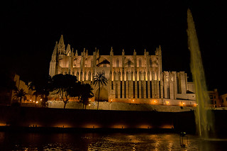
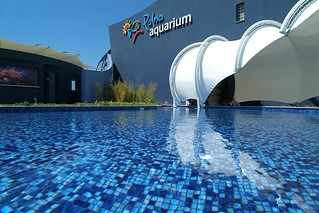
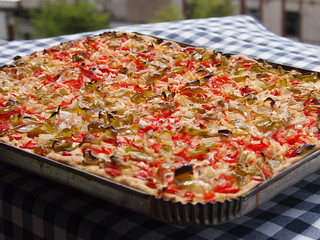
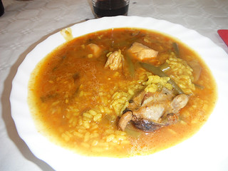
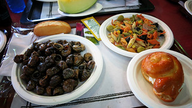
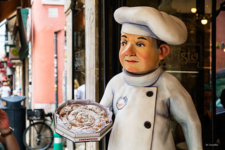

Mallorca
Algemene informatie
Mallorca is het grootste van de vier bewoonde eilanden en een perfecte reisbestemming voor het hele gezin. Het eiland biedt goed weer, prachtige stranden en heerlijke paella.
Volgens Eilandeninfo heeft Mallorca 862.397 inwoners. De oppervlakte van het eiland bedraagt 3.624,1 km2.
Dit betekent dat er ongeveer 238 inwoners per km2 zijn. Dit is hoger dan het gemiddelde aantal inwoners per km2 op de Balearen.
Mallorca heeft 2 luchthavens, 'Aeropuerto de Palma' en 'Aeropuerto de Marratxí', en 2 havens, 'Club de Mar' en 'Real Club Náutico de Palma'. Eén luchthaven wordt gebruikt voor nationale en internationale reizen, terwijl de andere voornamelijk voor nationale reizen en reizen tussen de eilanden wordt gebruikt.
Toeristische plekken
Kathedraal:

De bouw van dit prachtige werk begon rond 1230, tijdens het bewind van Jacobus II.
In 1498 werden de werkzaamheden aan de klokkentoren voltooid, die bestaat uit 9 klokken, waarvan de grootste Eloi heet.
Tussen de 17e en 18e eeuw had de barokstijl een grote invloed op de decoratie van het interieur van de kathedraal.
Antoni Gaudí paste het interieur opnieuw aan volgens de wensen van de kerk. Dit vond plaats tussen 1904 en 1915.
Van april tot oktober is de kathedraal geopend op weekdagen van 10.00 uur tot 17.15 uur en op zaterdag van 10.00 uur tot 14.15 uur.
Van november tot maart is het geopend van maandag tot en met vrijdag van 10.00 uur tot 15.15 uur en op zaterdag van 10.00 uur tot 14.15 uur.
De toegangsprijs voor een bezoek aan de kathedraal bedraagt €9 voor bezoekers van 8 jaar en ouder, gratis voor bezoekers onder deze leeftijd en €7 voor bezoekers van 65 jaar en ouder.
Aquarium:

Palma Aquarium is de perfecte plek voor een gezinsuitje, waar de kleintjes in een veilige omgeving kunnen leren over het zeeleven.
Er zijn interactieve punten waar bezoekers kunnen spelen met touchscreens, grote watertanks of zelfs medewerkers die informatie geven over de verschillende soorten die in het aquarium leven.
Er zijn ook speciale gebieden voor invasieve soorten om ze veilig in het aquarium te houden.
Het aquarium is op weekdagen geopend van 10.00 uur tot 15.30 uur, waarbij het laatste bezoek om 14.00 uur plaatsvindt om voldoende tijd te hebben om alles te bezichtigen.
Op weekends en feestdagen is het geopend van 10.00 uur tot 17.30 uur, waarbij het laatste bezoek anderhalf uur voor sluitingstijd plaatsvindt.
Kinderen vanaf 3 jaar betalen €17,00 voor een bezoek aan het aquarium, inclusief een bezoek aan het 3D Cinema Aquadome waar ze een film kunnen bekijken.
Volwassenen betalen €27,50.
Typische gerechten
Coca (de trampó)

Arroç Brut

Caragols

Ensaimada

Coca (de trampó) is een typisch Mallorcaans gerecht dat bestaat uit een plat deeg met tomaten, paprika, uien en olijfolie. Het wordt vaak geserveerd als voorgerecht of snack.
Arroç Brut is een rijstgerecht met verschillende soorten vlees en groenten, waaronder kip, varkensvlees, konijn, artisjokken, paprika's en snijbonen. Het heeft een rijke smaak en wordt vaak geserveerd als hoofdgerecht.
Caragols zijn slakken die worden gekookt in een heerlijke saus op basis van knoflook, peterselie, ui, tomaat en kruiden. Het is een populaire delicatesse in Mallorca.
Ensaimada is een zoet gebak gemaakt van licht gezoet deeg, opgerold in een spiraalvorm en bestrooid met poedersuiker. Het is een traditioneel dessert dat vaak wordt gegeten bij het ontbijt of als tussendoortje.